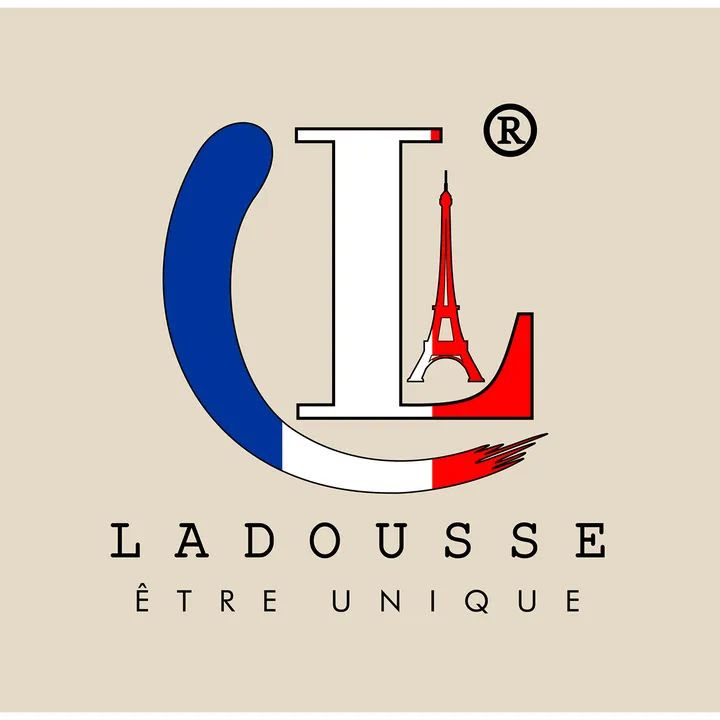

Ladousse - Plan del Sitio
1. Nombre del Sitio
Ladousse: Este nombre fue seleccionado ya que es la marca que representa la especialización en ropa médica. Proyecta una identidad única con influencia francesa, reflejada en el eslogan "Être Unique" y la estética general del logo.
2. Propósito del Sitio
El sitio proporcionará una plataforma en línea para vender ropa médica, incluidos uniformes para enfermeras, chaquetas para médicos, y accesorios como gorros quirúrgicos. Incluirá:
- Categorías de productos: Scrubs, Chaquetas, Accesorios.
- Páginas detalladas de productos con información de tallas y materiales.
- Sección de preguntas frecuentes (FAQ) y página de contacto para consultas y pedidos personalizados.
3. Escenarios
- ¿Qué productos ofrece Ladousse para profesionales de la salud?
- ¿Cómo puedo hacer un pedido personalizado o solicitar más información?
4. Esquema de Colores
Los colores seleccionados se basan en el logo de la marca, inspirado en la bandera de Francia:
- Azul (#002395): Navegación, botones y encabezados.
- Blanco (#FFFFFF): Fondo para mantener la claridad y limpieza visual.
- Rojo (#ED2939): Acentos en botones de "Agregar al carrito" y elementos importantes.
5. Tipografía
- Lato: Encabezados, para un aspecto moderno y profesional.
- Roboto: Texto del cuerpo, para asegurar legibilidad.
6. Wireframe
El diseño preliminar del sitio para dispositivos móviles y escritorio es el siguiente:
- Vista móvil: Imagen de héroe con productos destacados, categorías en formato columna, carrusel de productos, y footer con enlaces a FAQ y contacto.
- Vista de escritorio: Navegación horizontal con menú desplegable, imagen de héroe a pantalla completa, productos destacados en cuadrícula.